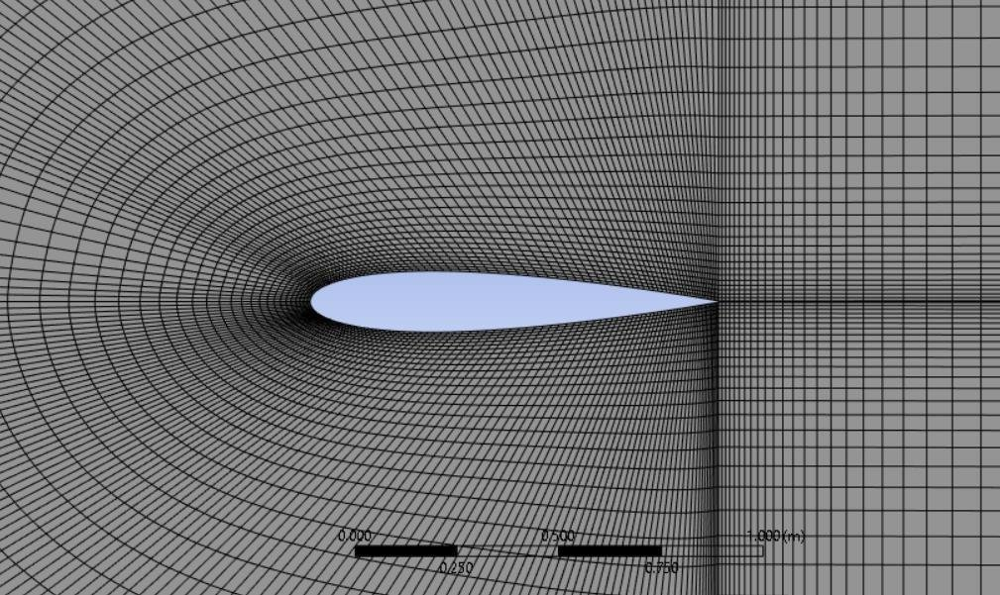
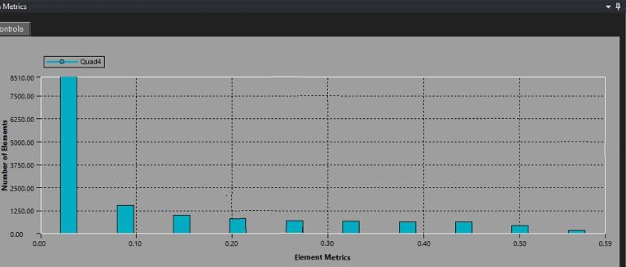
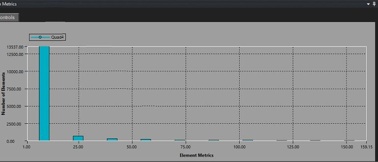
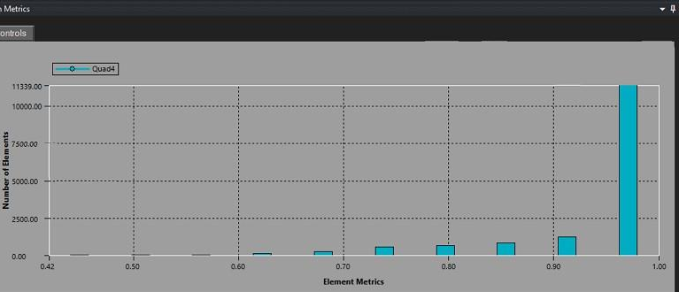
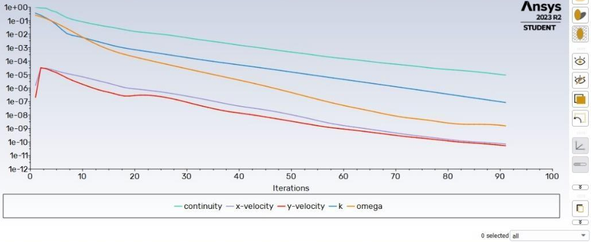
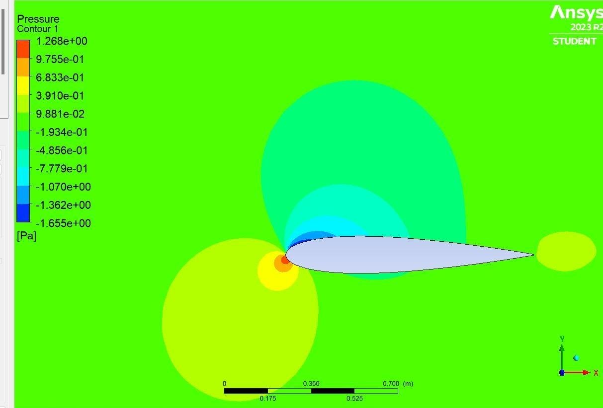
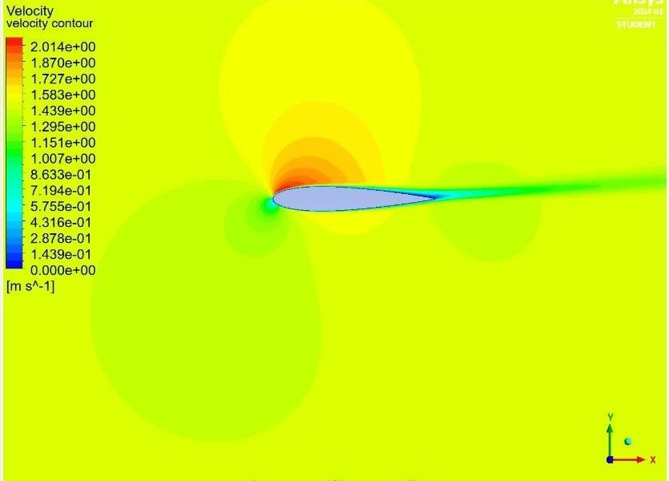
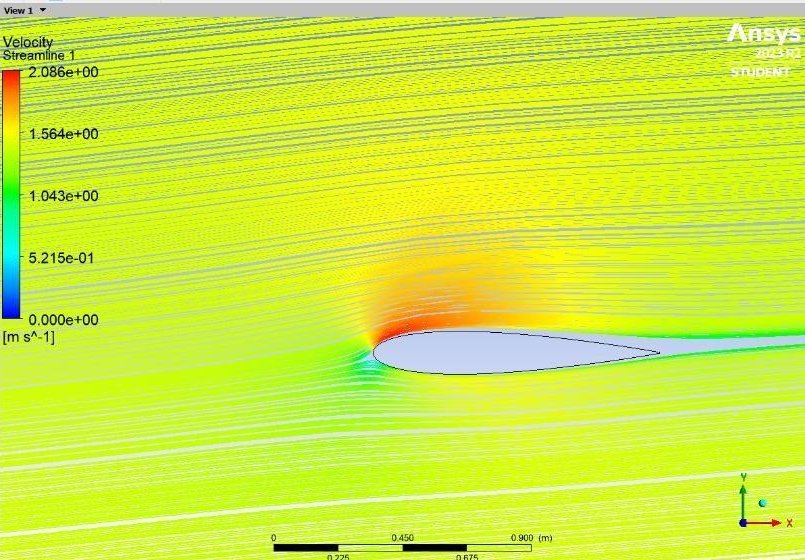
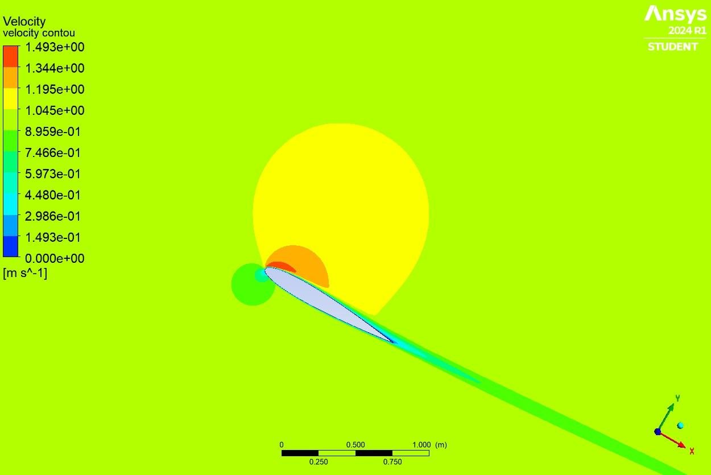
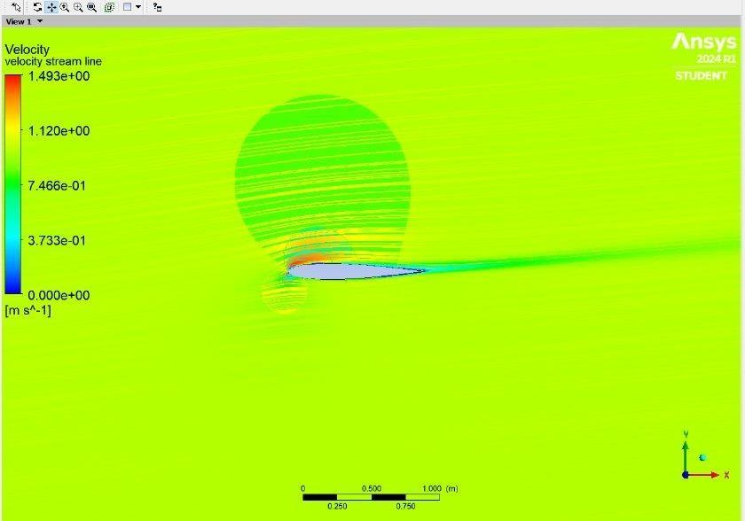

Computational Fluid Dynamics | Mesh Independence Study | Aerodynamic Validation

This project demonstrates a comprehensive CFD analysis of the NACA 0015 symmetric airfoil using ANSYS Fluent. The analysis includes a rigorous 9-level mesh independence study to verify solution accuracy, validation against NACA 0012 airfoil data, and detailed aerodynamic characterization through pressure distribution, velocity contours, and streamline analysis.
The study showcases practical CFD methodology: domain creation, structured meshing with boundary layer refinement, solver configuration, convergence monitoring, and result validation. Mass conservation verification confirms simulation accuracy.
Perform a complete CFD analysis of the NACA 0015 symmetric airfoil to:
The NACA 0015 airfoil geometry was imported from AirfoilPlotter into ANSYS Workbench. A C-mesh computational domain was created with dimensions of 12.5m radius, 12.5m horizontal extent, and 25m vertical extent to ensure far-field boundary independence.
Mesh Strategy: Structured quadrilateral mesh with strategic refinement:

Quadrilateral C-mesh, refined toward the airfoil surface and trailing wake using the bias-factor strategy described above. This is the final (Level 8) mesh used for production results.
A systematic mesh refinement study was conducted to ensure solution accuracy is independent of mesh density. The number of edge divisions was increased across 9 levels, and both lift and drag coefficients were monitored for convergence.
Before running the refinement study, mesh quality metrics were checked against ANSYS-recommended thresholds (skewness < 0.9, orthogonal quality > 0.1) to ensure the structured mesh would not introduce numerical error independent of resolution.

Average 0.114, max 0.589 — well within the 0.9 target.

Average 4.34 — elongated boundary-layer cells, as intended by the bias factor.

Average 0.954, min 0.649 — comfortably above the recommended minimum.
| Refinement Level | Edge Divisions | Cl (Lift) | Cd (Drag) | ΔCl from Prev. |
|---|---|---|---|---|
| 1 | 50–100 | 0.40294 | 0.033647 | — |
| 2 | 80–120 | 0.44244 | 0.029849 | +0.0395 |
| 3 | 120–160 | 0.45039 | 0.028261 | +0.0080 |
| 4 | 160–200 | 0.44988 | 0.027398 | -0.0005 |
| 5 | 200–300 | 0.44821 | 0.026560 | -0.0017 |
| 6 | 240–340 | 0.44877 | 0.025676 | +0.0006 |
| 7 | 280–380 | 0.45531 | 0.023611 | +0.0065 |
| 8 (Final) | 380–480 | 0.4555 | 0.02361 | +0.0002 ✓ |
Convergence stabilized at refinement level 7–8 (280–480 divisions). Changes in Cl and Cd between levels 7 and 8 are negligible (< 0.05%), confirming solution independence from further mesh refinement. Final values: Cl = 0.455, Cd = 0.0236

Scaled residuals (continuity, x/y-velocity, k, omega) for the final mesh, dropping below 1×10⁻⁹ by iteration 90 — confirming a fully converged steady-state solution rather than a stalled or oscillating one.
Velocity Distribution: Maximum freestream velocity of 1.460 m/s accelerates to 2.014 m/s at the leading edge and upper surface, representing a 38% acceleration. This flow acceleration over the curved upper surface generates the pressure gradient that produces lift.
Pressure Distribution: Classic airfoil pressure pattern observed:

Static pressure field (Pa): the low-pressure lobe (cyan/green) above the airfoil and the high-pressure stagnation point (orange/red) at the leading edge are the classic signature of lift generation on a cambered flow path.
Boundary Layer: The k-ω turbulence model accurately captures the thin boundary layer at the no-slip airfoil surface. Clear velocity gradient visible from zero at the wall to freestream at ~0.1m from surface.

Velocity magnitude (m/s): freestream flow accelerates to 2.014 m/s over the upper surface before decelerating into the wake.

20,000-point streamline trace colored by velocity, showing boundary-layer development and the discontinuity shed from the trailing edge.
| Parameter | NACA 0012 (12% thick) | NACA 0015 (15% thick) | Difference |
|---|---|---|---|
| Max Velocity | 1.493 m/s | 2.014 m/s | +34.9% |
| Boundary Layer | Resolved at both surfaces | Resolved at both surfaces | Similar quality |
| Stagnation Point | Leading edge (expected) | Leading edge (expected) | ✓ Consistent |
| Wake Structure | Moderate trailing edge discontinuity | More pronounced wake (thicker airfoil) | ✓ Expected physics |

Max velocity 1.493 m/s. Used as the relative-validation baseline.

Same stagnation point and boundary-layer pattern as the NACA 0015 case, confirming consistent solver behavior across geometries.
NACA 0015 results align with expected physics: thicker profile accelerates flow more significantly (34.9% velocity increase), creates more pronounced wake, but maintains consistent stagnation point and boundary layer behavior. Results validate against NACA 0012 reference.
Inlet mass flow rate: 1.483×10⁻³ kg/s
Outlet mass flow rate: 1.483×10⁻³ kg/s
Difference: < 0.1% — Confirms steady-state solution accuracy and solver convergence.
The 9-level refinement study showed that coarse meshes (Level 1: 50–100 divisions) significantly underpredict aerodynamic coefficients. Cl increased by 13% from Level 1 to convergence, and Cd decreased by 30%. This demonstrates why blindly trusting a single mesh is dangerous — convergence studies are essential for CFD credibility.
The bias factor strategy (concentrating elements near the airfoil surface) was critical. By clustering 50 divisions near the leading edge with a bias of 150, boundary layer resolution was excellent without over-meshing the far-field. This efficiency is why structured meshing remains preferred for airfoil problems despite the rise of unstructured methods.
The k-ω model was selected over k-ε because it handles near-wall effects better without wall-function corrections. This is evident in the resolved boundary layer visible in contours. For wall-bounded flows, k-ω is superior to k-ε.
Comparing NACA 0015 against NACA 0012 provided a check that didn't rely on published tables. The 34.9% velocity increase due to 25% greater thickness is physically sensible and matches intuition. This "relative validation" approach is practical when experimental data is unavailable.
The C-mesh topology (radius 12.5m, vertical extent 25m for 1m chord) ensured far-field boundaries don't distort flow. Domain size is roughly 12.5 chord lengths away — a standard practice. Smaller domains would introduce artificial boundary effects; larger domains waste computational resources.
Convergence was determined by:
This CFD study of the NACA 0015 airfoil demonstrates a complete, professional approach to aerodynamic analysis: rigorous mesh independence verification, proper turbulence modeling, validation against reference data, and mass conservation checks. The 9-level refinement study proves that convergence was achieved, not assumed.
Key findings (Cl = 0.455, Cd = 0.0236, L/D = 19.3) are physically realistic for a symmetric airfoil at low angle of attack. The comparison with NACA 0012 validates results and demonstrates how thickness affects flow acceleration (34.9% increase) and wake structure. The work illustrates both CFD methodology and practical airfoil aerodynamics.
✓ Project Outcomes